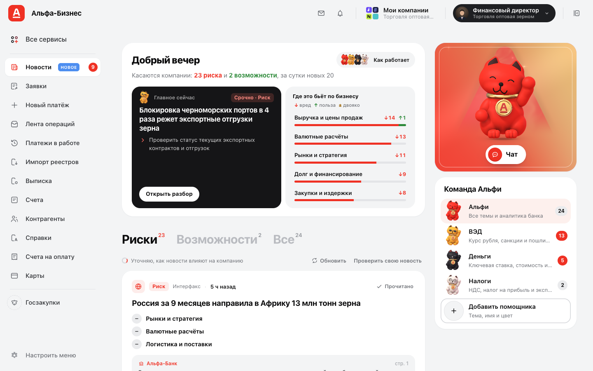
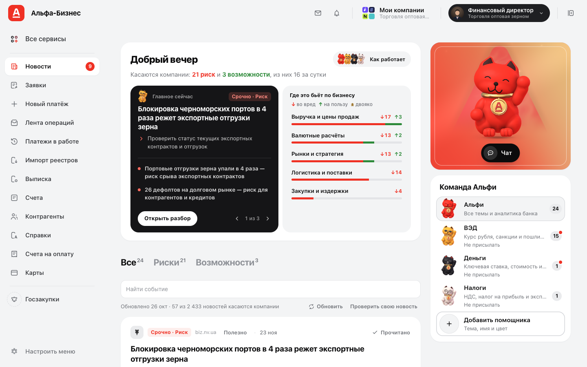

Жюри: «Проверьте веса и качество ранжирования на данных: приоритет должен отражать значимость события для компании.»
Факторы (ставка, курс, пошлины) больше не набирают максимум за 3 общих слова: каждый следующий даёт меньше, 100% → 35% → 15%.
ОКВЭД новое: зернотрейдеру зерно важнее картошки. Регион только при связи с отраслью, Москва и Питер +0,06.
Левее пунктира ×1 новость теряет вес, правее получает.
Каждой из 5 компаний дали одни и те же 16 новостей и вручную оценили все 80 пар. 1 столбик = 1 новость, попавшая в ленту.
Это была ровно одна новость на 25 мест. Топ-5 строительной компании:
Жюри №2: «Не переносите общий рыночный рост на результаты компании. Уточняйте условия реализации возможностей и точно передавайте смысл источников.»
Жюри №3: «Не выдавайте разбор как готовый при оставшихся противоречиях и неподтверждённых цифрах. Сохраняйте ссылки на дополнительные источники.»
Новые правила: у каждой возможности указаны условия, и учтены уточнения пользователя (11-е, если они есть).
Правило цифр теперь называет каждое неподтверждённое число, а не просто «есть проблема».
Новость: «Инвестиции в жилую недвижимость Петербурга выросли на 25%».
Компания строит инженерные сооружения в Иркутске.
«Перенесла рост СПб на иркутскую компанию как прямую возможность»вердикт судьи в бенчмарке
Вывод про компанию без условий ловит правило «условия реализации», и разбор уходит на доработку.
Раньше статуса не было: любой разбор показывался как готовый. Теперь сверху баннер с причинами, например для ловушки про квоту на зерно:
Ложная тревога ушла: дата 23.10.2026 раньше читалась как число 23,1 и помечала разбор зря.
Доля ответов с выдумкой. Судит модель другой семьи.
Жюри №4: «Проверяйте даты и форматы данных, согласованно обновляйте текст, разметку и кэш. Исключите смешение компаний, привяжите историю чата к событию и учитывайте уточнения пользователя.»
Жюри №5: «Отделите загрузку, правила обратной связи и работу с базой данных от обработки веб-запросов.»
Сноски на новости и аналитику банка сохраняются в истории и возвращаются, когда открываешь диалог снова.
Файл main.py принимает веб-запросы. Что в нём жило:
main.pymain.pymain.pyтолько HTTP и стрим ответов515 строкingest.pyпланировщик, прогрев ленты, загрузка своих новостей89 строкfeedback.py«полезно» +0,15 к весу, «не по делу» −0,285 строкdb.pyвесь SQL и миграции, без бизнес-логикиАвтотест разбирает код main.py и падает, если туда вернутся запросы к базе, потоки или формулы отклика. Всего 57 из 57 тестов зелёные.
После отбора над интерфейсом провели отдельную дизайн-итерацию: главное видно сразу, лента ищется и считается.


ДОодно событие и шаг, без ключевых цифр
ДОстарт с «Рисков», без поиска, вечный спиннер
ДОяркие красные кружки-счётчики
ДОметка «Риск» и источник простым текстом